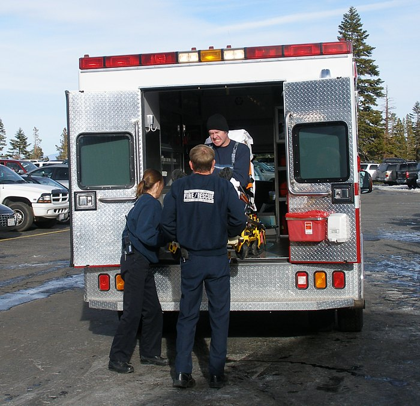

cientista morto
09-junho-2012Homem para a ambulância, mata os paramédicos, esfaqueia o paciente, e retira o objeto que estava no peito do doente. A vítima era um cientista que trabalhava para a US Navy.